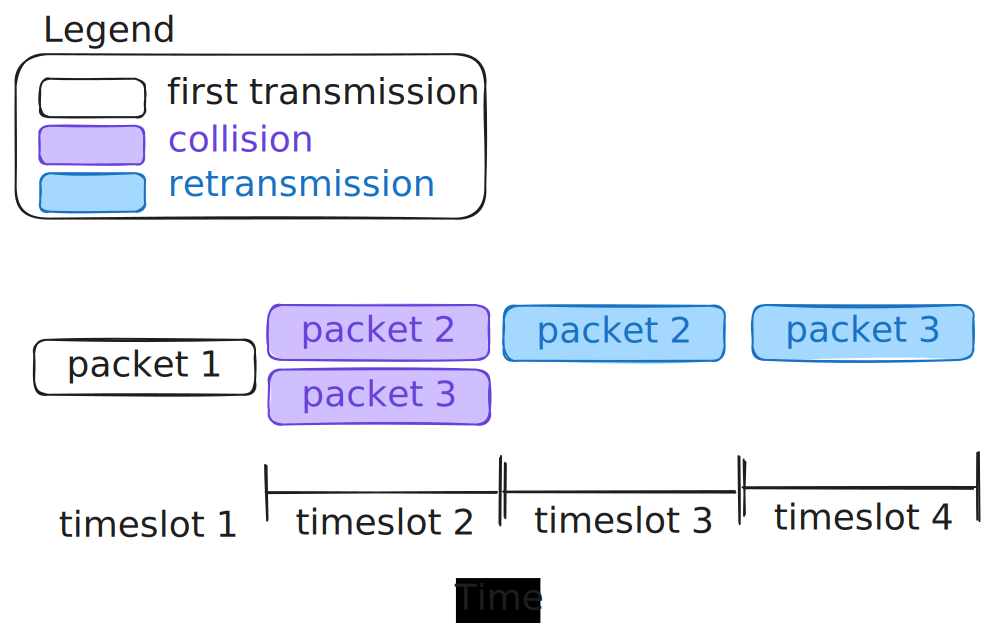

Responsible for transferring packets from one node to another, that are physically connected. Each frame encapsulates datagrams, which encapsulate segments, which encapsulate messages. So the sender does this encapsulation, and sends the frame over a NIC, then the receiver takes the frame and unpacks it (i.e. get out datagram, extract segment from it, and pass the message to the application layer):
It’s important to note that over a given network there can be many different link layer protocols (for example a fiber optic cable can be connected to a router that uses WIFI[802.11.xx], that connects to COAX etc.). The network layer above the link layer assumes it’s not very useful. You also typically implement reliable delivery at this layer, but for some physical connection types (like fiber optics) the error layer is so low that they often don’t implement it. This is why reliable data transfer is implemented at both this later and the transport layer to detect the errors that occasionally happen.
There are two different approaches to how links are structured:
- Direct point-to-point:
- Devices are wired together directly, with no additional hardware between
- Often data is send directly across the connections
- Multiple access control (MAC)
- When you’re in a network with more than 2 total devices this helps you disambiguate devices
Additionally some protocols implement (note you’re not guaranteed any of this):
- flow control, which basically is just a system to make sure devices in a network don’t get overwhelmed
- Error detection & correction; since you’re using signals there can be noise and signal attenuation. If errors are detected, some schemes will help you drop those frames and resend (fancier ones can correct errors). Please note that this is never 100% reliable.
- Can use single bit parity (is-even/is-odd), or 2d parity (locatable parity)
- Duplexing: with half duplex two nodes can send or receive simultaneously (but not both), full duplex allows simultaneous sending and receiving
Some of these features are done in hardware (NICs, WIFI chips, switches), others are in software (driver/firmware).
Switching (TODO)
Switches are used to create LAN’s (which are then composed together by routers at the Network layer). Wired LAN’s are constructed primarily using Ethernet (which uses CSMA/CD). For wireless networks primarily WIFI (802.11.xx) is used (typically with CSMA/CA.
MAC
MAC protocols are a branch of multiple access protocols. Multiple access protocols are protocols that are used to avoid collisions. Essentially when multiple devices can transmit over a network, they need to be told how each of them can take turns. If they run at the same time, then they will “talk over” each other.
An ideal system should:
R = Transmission Rate (bits/s)
- When M nodes are active, each should transmit at an average rate of R/M
- When only one node is active, it can send at rate R
- Fully decentralized
- No special node to coordinate
- No synchronization of clocks & slots
- Simple
There are three broad classes of protocols:
- Channel Partitioning
- Random Access
- Turns/Controlled Access
- Nodes take turns, but nodes with more data to send will take longer turns
- Reservation
- Polling
- Token Passing
- Try to be efficient at high and low load
- Nodes take turns, but nodes with more data to send will take longer turns
MAC Addresses
Devices on the same LAN will have a dedicated MAC address. They are a 48bit number that is typically “burned into” your NIC (though some devices let you modify them) typically by storing them on read-only memory. MAC addresses are intended to be unique per-device. Manufacturers must purchase MAC addresses in bulk from IEEE. After a few decades they can be re-used. To use an analogy a MAC address is like a social security number, you will only have 1 in your life. However an IP address is like a physical address, you might end up with a bunch over your life.
ARP (TODO)
ARP (address resolution protocol) is the protocol that allows you to convert an IP address to a MAC address.
arp -a # See arp table
arp -d * # Clear all arp cacheYou can then ping devices to discover them.
TDMA
TDMA (Time division, multiple access) is a “channel partitioning” system. Each node accesses channels in “rounds”, each node gets a fixed-length time slot for each round. Any unused slots go idle.
Pros:
- Simple to implement
- Fairly partitions bandwidth
Cons:
- Wasteful; Any nodes have to wait their turn to run. Fine if lots of nodes have small messages, but if one node has tons of data, it will sit waiting over and over again.
- Slow; Transmissions that could be done in one long burst have to wait for their next “turn”.
FDMA
FDMA (Frequency division multiple access) instead breaks up the bandwidth into different “frequency bands”, which devices then entirely rent. This makes it a Channel Partitioning algorithm:
Pros:
- Simple to implement
- Fairly partitions bandwidth
Cons:
- Wasteful; Any nodes have to wait their turn to run. Fine if lots of nodes have small messages, but if one node has tons of data, it will sit waiting over and over again.
- Slow; Transmissions that could be done in one long burst are slowed down by partitioned bandwidth
ALOHA (TODO)
Is a random access protocol. Meaning it allows collisions to happen, and then tries to recover from it. The algorithm is incredibly simple, a user transmits at will, for each message they will get an ACK. If there’s a collision, they won’t get an ACK, and the device will retransmit. But to avoid another collision the retransmission rates are staggered per-node. Essentially a random number is set to wait for (within a range).
The pseudocode is something like:
transmissionTime // The time to wait for a response after sending initial data
backoffTime // Randomly generated (within a rnage) time to wait to retransmit
if device.hasData(){
ACK = transmit()
wait(transmissionTime)
if !ACK{
backoffTime = randomNumberWithinRange()
wait(backoffTime)
// retransmit and repeat until ACKed
ACK = transmit()
}
}
The throughput for this approach is , meaning the maximum efficiency is when where the throughput is %18.4. The main advantage of ALOHA vs slotted ALOHA is that it’s easy to implement.
Slotted ALOHA (TODO)
Slotted ALOHA modifies the original ALOHA algorithm to split the shared channel into time slots, with these time slots, data is only allowed to be sent at the start of the time slot. This should hopefully help improve the throughput of ALOHA by dropping the retransmission rate.

Even if packet 2 was ready to go in the middle of timeslot 1, it would have to wait until the start of timeslot 2.
: where G is the number of station that wish to transmit at the same time
So, when
Assumptions:
- All frames same size
- Time divided into equal size slots (time to transmit = 1 frame)
- nodes start to transmit, only at slot beginning
- nodes are synchronized
- if 2 or more nodes transmit in slot, all nodes detect collisions
Pros:
- single active node can continuously transmit at full rate of channel
- highly decentralized: only slots in nodes need to be in sync
- simple
cons:
- collisions, wasting slots
- idle slots
- nodes may be able to detect collision in less than time to transmit packet
- clock synchronization
- max efficiency = = 37%
- Still twice as good as pure ALOHA, but still bad
CSMA (TODO)
CSMA (Carrier sense multiple access) Is a random access protocol. Meaning it allows collisions to happen, and then tries to recover from it. Essentially the algorithm is that you broadcast whenever you want, however before you broadcast you stop and listen on the network to see if it’s idle (like listening before speaking). Distance and propagation delay increase collision probability.
There are 4 main variants:
- Persistent CSMA
- Continuously listen to network for idle, and send as soon as it’s idle
- Non-persistent CSMA
- Wait a random amount of time between listening to the network for idle state
- P persistent CSMA
- Continuously listen to network for idle, then use a probability to determine if you should send
- O persistent CSMA
- A supervisor node determines the order
CSMA/CD (TODO)
Use CSMA, but while transmitting you listen to channel for collisions (collision detection). When a collision is detected, immediately stop transmission. The collision detection itself is easy in wired connections, but really hard in wireless.
Efficiency is where Tr is the transmission time (round trip time of 1 bit), and Tp is the Time to propagate (2*propagation time)
- if distance increases CSMA/CD efficiency decreases
- The length of packets also increases efficiency, where the larger the better (up to the maximum size of 1500 Bytes)
CSMA/CA (TODO)
Use CSMA but avoid collisions. This is a better alternative than CSMA/CD for wireless networks. This allows us to reserve the channel for specific frames.
Send CTS (clear to send), while others send RTS (request to send)
Token Passing (TODO)
Arrange the nodes in a network into a ring (essentially a linked list), each node waits for the token, and when receives is able to broadcast over the network. Essentially it’s like having a talking stick to be allowed to speak.
Pros:
- Compared to polling there’s no master node
Cons:
- Token overhead
- Latency
- Single point of failure (if for some reason token gets broken, like if a device dies while it has the token)
- More robust versions of this protocol address this, but then that adds complexity and overhead
Polling (TODO)
One node is selected to be a master node, every other node in the network is considered a slave node. The master node will then iterate through the slave nodes, and ask each of them if they have any data to send. This is often used in bluetooth (because typically smaller networks).
Pros:
-
No constant competition (each waits it’s turn)
-
No wasted bandwidth when transmitting cons:
-
Single point of failure
-
Latency
-
Polling overhead
Error detection Algorithms
There are a collection of error-detecting algorithms that can be used to check for any potential errors when messages are sent at the link layer.
Single-bit Parity
Single bit parity is very easy to implement and check. With whatever data you send, you select a bit to be the parity bit. This bit will take every other bit in the message, sum the number of 1’s, and check if that value is even or odd. If it’s odd, then the parity bit is 0, if it’s even, the parity bit is 1. This means if a bit is flipped in the message, then it will change if it’s even or odd. For example consider the 31 bit sequence:
1010101011001001000101011100101
There are 15 1’s in this sequence. In our case we will add a 0 to the right-most side, making the total sequence 32-bits, and the right-most bit being our parity bit.:
10101010 11001001 00010101 11001010
Now if any single bit is flipped in the sequence, there will be an error detected. The code for this can be found below in python:
from collections import Counter
def generate_parity(sequence:int) -> int:
sequence_string = str(bin(sequence))[2:]
number_of_1s = Counter(sequence_string)["1"]
if (number_of_1s % 2) == 0: # even
sequence_string += "1"
else: # odd
sequence_string += "0"
return int(sequence_string, 2)
def check_parity(sequence:int) -> bool:
sequence_string = str(bin(sequence))[2:-1]
parity = int(str(bin(sequence))[-1])
number_of_1s = Counter(sequence_string)["1"]
if parity == 1:
return (number_of_1s % 2) == 0
else:
return (number_of_1s % 2) != 0
if __name__ == "__main__":
# Test non-error
message_1 = int("1010101011001001000101011100101",2)
message_1_with_parity = generate_parity(message_1)
# make a message with an error ()
# Flipped bit at pos 3
message_with_error = int("1011101011001001000101011100101",2)
print(f"Message 1 had no errors: {check_parity(message_1_with_parity)}")
print(f"Message 2 had no errors: {check_parity(message_with_error)}")Which prints:
Message 1 had no errors: True
Message 2 had no errors: False
Two-dimensional bit Parity (TODO)
… Only really good for situations that are very sensitive (i.e. transmissions with the mars rover), since it adds a ton of data overhead
Forward Error Correction Coding (TODO)
…
Cyclic Redundancy Check (TODO)
…